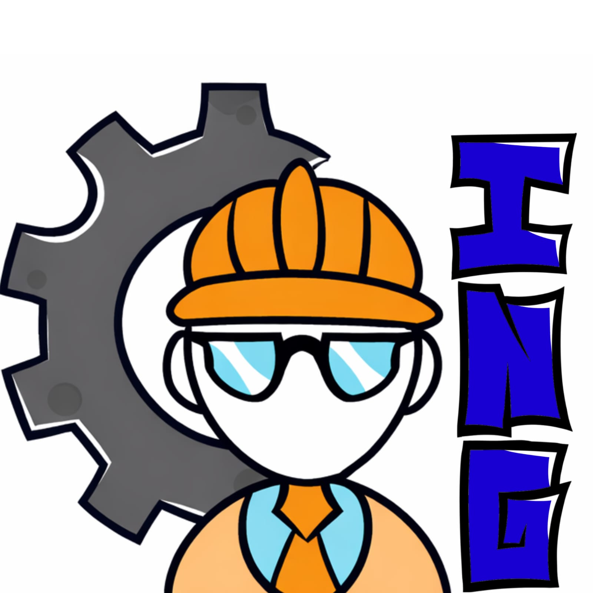

Misión
Ayudar a ingenieros a encontrar empleo de manera eficiente mediante una plataforma digital que conecta sus habilidades con oportunidades laborales adecuadas.

Tu ingenio, tu esfuerzo, tu oportunidad
IngeJub es una plataforma digital que ayuda a estudiantes e ingenieros a encontrar empleo de forma eficiente, conectando sus habilidades con vacantes que se ajustan a su perfil.
Una plataforma diseñada para la vinculación eficiente entre talento de ingeniería y oportunidades laborales de calidad.
Ayudar a ingenieros a encontrar empleo de manera eficiente mediante una plataforma digital que conecta sus habilidades con oportunidades laborales adecuadas.
Ser una plataforma líder en la conexión de ingenieros con oportunidades laborales, reconocida por su eficiencia y facilidad de uso.
Un plan por fases para validar, lanzar y escalar la plataforma IngeJub.
Áreas clave y los responsables del proyecto.
Cervantes Martínez Rey Yazhidd
Salvador Serrano Daniel
Corona Torres Jesús Enrique
Esquivel Dávila Jaqueline
Indicadores clave para medir el impacto de la plataforma.
Mide cuánto tarda un usuario en encontrar empleo o prácticas.
Qué tan compatibles son las vacantes con el perfil del usuario.
Cuántas vacantes aplica el usuario.
Cuántas empresas responden a los usuarios.
Cuántos usuarios usan la aplicación regularmente.
Qué tan satisfechos están con la aplicación.
Cuántos usuarios logran conseguir trabajo.
Conéctate con IngeJub y sigue sus redes oficiales.
Redes sociales: @IngeJub_Oficial
Correo: contactoingejub@gmail.com